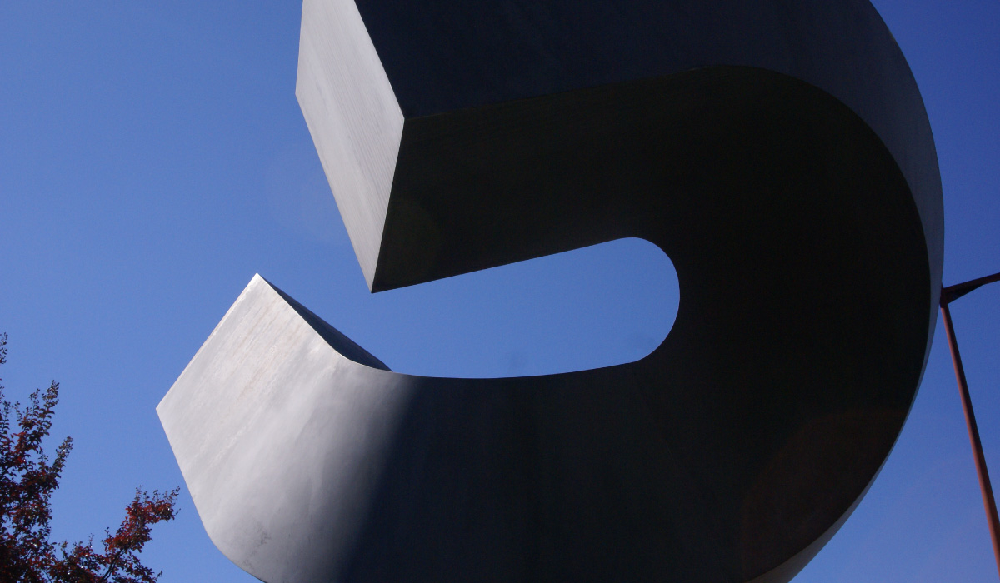
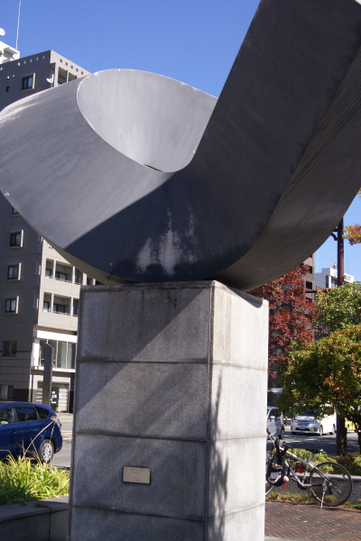
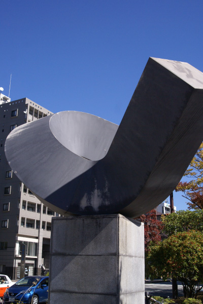
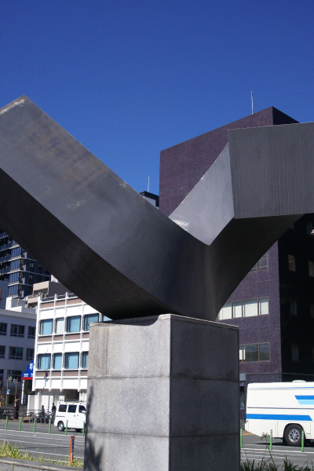
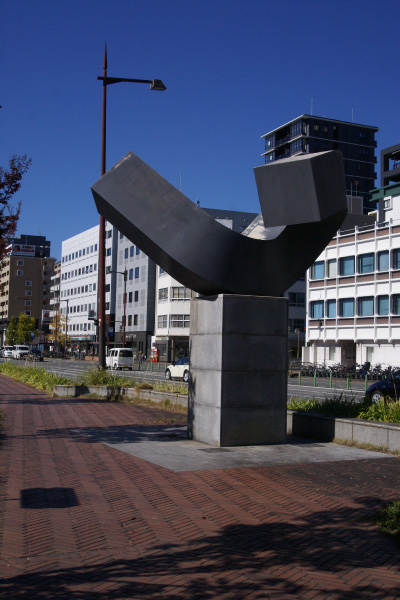
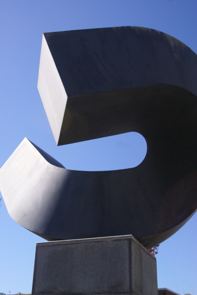
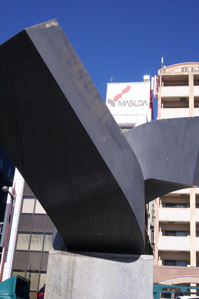

クレメント・ミドモア
     
オーストラリア、メルボルン出身のアーティスト。ニューヨークを中心に活動した芸術家。巨大な長方形
をねじったり曲げたりした作品を特徴とする。抽象表現主義とミニマリスムの要素を持ちながら、自己直
感を造形に落とし込んだ。金属が生み出す重厚感と曲がった造形のしなやかさの共存がユニークである。
アーティスト自身「シンプルながらあらゆる方向から鑑賞することができる作品」と語っているそうだ。